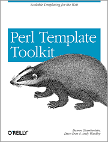
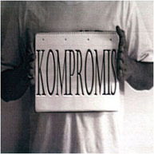

Dynamicky generované statické stránky pomocou TT
Jozef Kutej

Čo nás čaká?

1) statické stránky?
2) dynamické stránky?
3) Template::Toolkit
4) http://ba.pm.org/
CERN 1980,
fyzik Tim Berners-Lee
myšlienka na zdielanie
výskumných dokumentov
sa premenila na
HTML s 22 elementmi
HTML eq "text so značkami" :)
a tie dali základ
modernému dynamickému web-u
Dynamické stránky
- dynamické => interaktívna skúsenosť
- reagujú na kontext/podmienky/správanie
- čo sa dá dosiahnuť buď buď u klienta - client side scripting
- alebo na strane servera - server side scripting/programming
- alebo pred generovaním si obsahu
- hmm
klasické statické stránky
nevýhody
- pri počte > 2 to začína byť otrava
- udržať jednotný vzhľad zachraňuje pred utópiou len existencia CSS
- opakujúce sa prvky v X dokumentoch
statické stránky
výhody
- rýchle "spracovanie" web serverom
- statický content vie poskytovať akýkoľvek web server bez úpravy
- nginx - 10,000 inactive HTTP keep-alive connections take about 2.5M memory
- 100000 requestov na .png (313kB) od 1000 klientov
za 12,5s (8034.86 [#/sec]) - statickým obsahom sa dá lacno nakŕmiť veľa klientov
server side Scripting/Programming
nevýhody
- stojí CPU
- stojí pamäť
- ušité na "mieru" sw čo beží na serveri (Apache HTTPD, IIS, Tomcat)
- ASP, PHP, JSP, SSI, CGI, ...
server side Scripting/Programming
výhody
- ináč TO číslo kreditnej karty proste nedostaneme!
- Amazon v "statike" nepobeží
Pohodlnosť
<? Include "./_conf.php"; Include "./_head.php"; ?> <h1>Vitajte na mojej stránke.</h1> <p>Prišiel som na svet a na nič viac som neprišiel.</p> <? Include "./_tail.php"; ?>
Chce to Kompromis

-KOMPROMIS (2005 LP)-
Template::Toolkit
- http://search.cpan.org/perldoc?Template
- Tento Perl modul umožňuje vložiť špeciálne značky do textového súboru ktoré sú rozpoznané
a spracované. Predvolené sú
[% %], ale dajú sa jednoducho predefinovať na iné - Štandardné použitie Template Toolkit je v MVC frameworks. Kde sa požíva ako View ktorý je schopný vygenerovať XML, plain text, PDF, ... a samozrejme HTML.
Template::Toolkit
- obsahuje `ttree` príkaz
- ktorý je určený na konvertovanie stromu templejtov
- takto je generovaná Bratislava.pm.org
Bratislava.pm.org
- jednotná hlavička a päta
- menu s "vysvietením" aktuálne zvoleného prvku
- generovaný RSS feed a stránka s udalosťami (vďaka XSLT)
- jednotné (meta+js) redirekty /go/XYZ
- sk/en jazykové verzie (momentálne beta verzia)
- ->
Bratislava.pm.org
- test či sú stránky xhtml valid
- test či všetky interné linky "dobre odkazujú"
- možnosť hostovania na "čomkoľvek" aj na file://
(s výnimkou send-feedback.cgi) - dva stupne zmien - dev + prod
- automatický prod deployment z SVN